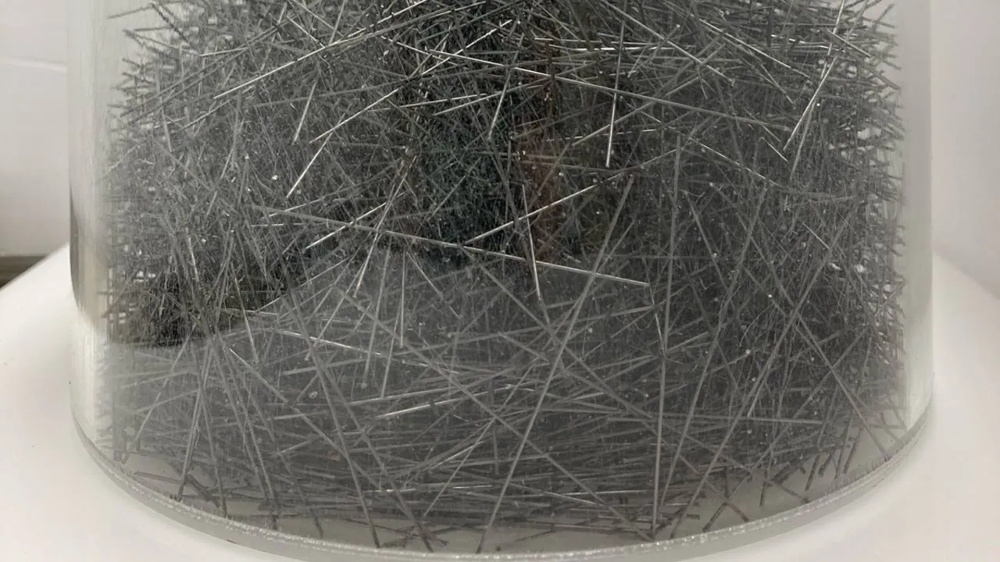

Experiments on rod packings, mud nests, plant roots, rolling bodies, hydrogel beads on a hot pan, shark-skin riblets and creased sheets, measured with X-ray CT (with the load applied inside the scanner), load frames, video tracking and particle image velocimetry.
Each entry says what my part was. The clips are muted and play while they are in view.
Clips and photographs are from the experiments themselves, or from the papers' supplementary movies and figures.

1.1Granular matter · X-ray CT
Entangled rod packings
Steel rods with length-to-diameter ratios from 30 to 200, poured into cylinders, compressed and scanned by X-ray micro-CT. Packings entangle past a ratio of about 100. I ran the experimental analysis with T. Plumb-Reyes and H.-Y. G. Lin and traced every rod in the scans.
I built a loading rig for the scanner's rotation stage: a clear cylinder of rods, a plunger on a linear actuator and a force sensor. The packing is loaded and unloaded in steps, with a scan at each step, so the force and the 3D contact network come from the same sample. From each scan I count the contacts and compute the network's algebraic connectivity.
Swallows build nests from mud granules that do not stick to one another, bonded by their own saliva. With S. Jung, I measured the strength of real nests and of polymer-bridged granules in bending and in a centrifuge, and printed nests from clay and mucin. I computed the stress in a 3D scan of a nest with finite elements (COMSOL): under the 41.5 N load at which a real nest broke, tension peaks where it tore away. Clip: the nest failing under 4.15 kg, then the fracture beside the computed stress (Fig. 2 of the paper).
Artificial roots draw water out of a bed of packed glass beads on a balance. With K. Park, I ran these experiments. With the theory, they show that roots take up the most water for the cost of growing them when their length density falls logarithmically with depth.
3D-printed irregular cylinders roll down a rubber-coated ramp, tracked on video. As the ramp angle changes, their terminal speed goes through first- and second-order transitions. With D. Qian, I ran these experiments.
In a pan far above boiling, a water-swollen hydrogel bead floats on its own vapour. Each time it meets the hot wall, a burst of vapour kicks it back across the pan, so its energy comes only from the boundary. How fast it moves and how long it lasts depend on the temperature. M. Cho, J. Ha and I came up with the experiment together, and I model the motion. Clip: the paper's first supplementary movie.
M. Cho, Y. Jung, J. Ha. Boundary-driven activity of a Leidenfrost hydrogel. Physical Review E, under revision · corresponding author
1.7Fluid mechanics · PIV
Shark-skin riblets in a water tunnel
Plates with riblets, the fine grooves of shark skin, were machined and tested in a water tunnel. A laser sheet and particle image velocimetry measured the flow over them. I worked on the modeling, fabrication and flow measurement, with S. Raayai-Ardakani.
Unpublished · Rowland Institute at Harvard, 2020–21
1.8Thin sheets · mechanical tests
Partial creases in thin sheets
A pin pressed into a thin sheet leaves a crease that stops inside it. Creases were pressed with 3D-printed dies and on a mill, then profiled with a laser line and loaded in a load frame. With colleagues in the Mahadevan group.
Unpublished · Harvard SEAS, 2024
02 · With experimental collaborators
Models of others' experiments
Collaborators built and ran these experiments. My part was the model or the analysis.
2.1Soft robotics · micro-CT
A gripper that holds by entanglement
Thin inflatable filaments coil around an object and around one another, and the tangle holds it. K. Becker and colleagues in R. Wood's group built the gripper and ran the experiments; the clip is theirs. I worked on the analysis, including micro-CT scans of filaments wrapped around objects, and later simulated the gripper.
Filaments printed with an active and a passive side curl when heated, and lattices of them rise into domes and saddles. I predicted the shapes with discrete elastic rod simulations. Experiments by M. K. Abdelrahman and J. K. Wilt in J. A. Lewis's group.